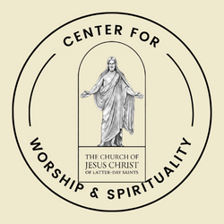

Overview
Purpose:
I am creating this web page to document and share our family's journey as we actively participate in humanitarian and community service projects. This platform will serve as a hub for highlighting our various initiatives, sharing success stories, and encouraging others to engage in philanthropy. Additionally, through this web page, we aim to raise awareness about specific causes and provide resources for those interested in making a positive impact on their communities.
Audience:
- Families with Philanthropic Interests: Families looking for motivation and practical insights on engaging in meaningful humanitarian and community service projects.
- Community Organizations and Nonprofits: Organizations interested in collaboration opportunities, sharing best practices, and gaining insights from a family actively involved in community engagement.
- Students and Educational Institutions: Students and academic institutions seeking a valuable resource to inspire and guide students in community service and social responsibility.
Branding
Website Logo
Style Guide
Color Palette
This section describes the color palette used in the site design.
Typography
Headings Example Font
This is an example of the font used for headings.
Normal Text/Paragraph Example Font
This is an example of the font used for normal text and paragraphs.
Colored Callout Example Font
This is an example of the font used for colored callouts.
Navigation
Wireframes
Home Page Wireframe

About Us Page Wireframe